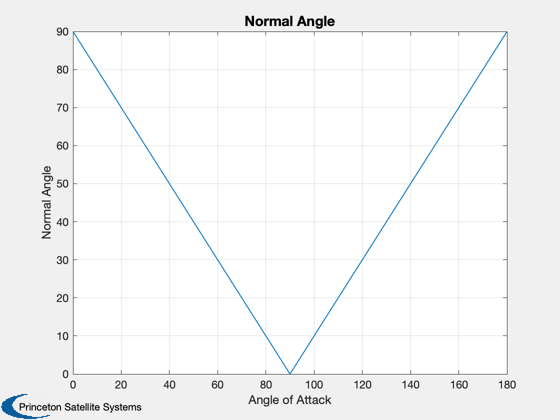
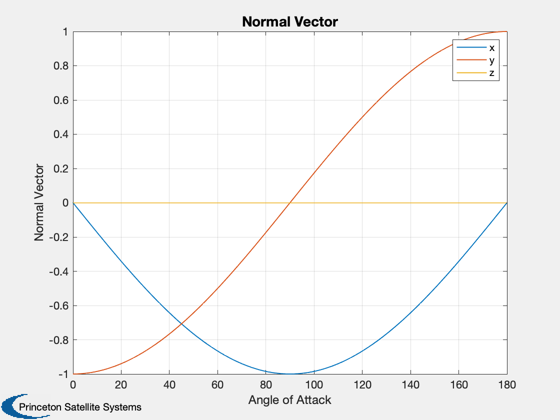
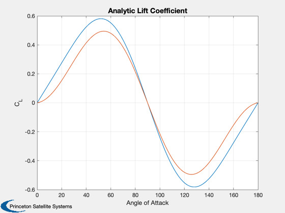
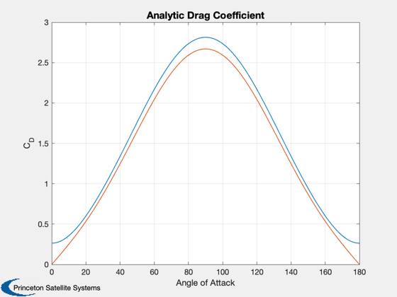
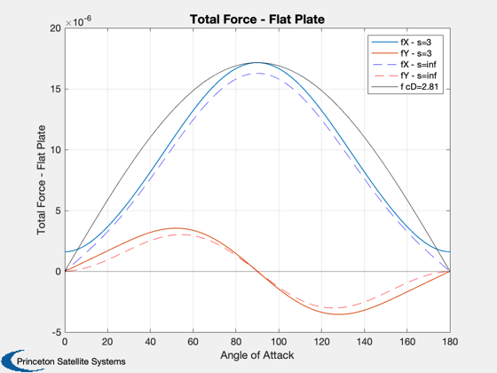
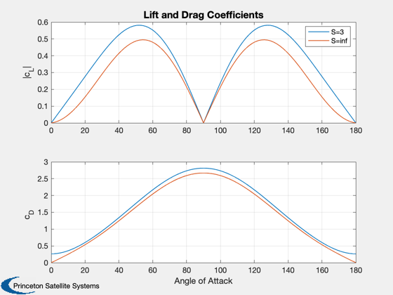

Contents
Surface accommodation drag demo on a flat plate
The drag and lift are parameterized by the ratio of the orbital velocity (the flow velocity) to the thermal velocity of the atmospheric particles. This speed ratio is "S". The demo compares specular and diffuse accommodation coefficients to those in the reference and those computed from experimental data, then computes the lift and drag as a function of angle of attack of the plate for S=3 and S=infinity.
- Hypermolecular flow/fully accommodated: S = infinity, tA ~ 0 K.
- Typical spacecraft orbit parameters: S = 3-10, tA ~ 1000 K
- Specular reflection: sigmaN = sigmaT = 0
- Diffuse reflection: sigmaN = sigmaT = 1
- Reference values: sigmaN = sigmaT = 0.7
------------------------------------------------------------------------
References: Storch, J. Aerodynamic Disturbances on Spacecraft in
Free-Molecular Flow, Aerospace Report TR-2003(3397)-1,
https://ascelibrary.org/doi/10.1061/40722%28153%2960
------------------------------------------------------------------------
See also: FAeroSurfaceAccommodation, AeroF
------------------------------------------------------------------------%-------------------------------------------------------------------------- % Copyright (c) 2022 Princeton Satellite Systems, Inc. % All rights reserved. %-------------------------------------------------------------------------- % Since version 2022.1 %-------------------------------------------------------------------------- % Define front and back of a flat plate area = 1; data = struct; data.area = area*[1 1]; data.normal = [1 -1;0 0;0 0]; % front and back of plate data.temperature = 188*[1 1]; % Atmosphere rho = 2.118338996643465e-13; % kg/m3 tA = 2149.00; % K mG = 17.06700873108905; % amu, g/mol mu = 3.98600436e5; % km^3/sec^2 alt = 6928; % km U = sqrt(mu/alt)*1000; % Orbital velocty for flow
Purely normal flow
Lift should be zero, drag is at maximum
fprintf('\n----- Normal flow -----\n') u = U*[1;0;0]; fT = []; % Calculated coefficients, cosAlpha = 1 [sigmaN_1, sigmaT_1] = AccommodationCoefficients( 1 ); % Specular, sigmas == 0. Diffuse, sigmas == 1. sigmaN = [0 1 0.7 sigmaN_1]; sigmaT = [0 1 0.7 sigmaT_1]; for k = 1:length(sigmaN) [fT(:,k),cD(k),cL(k),f] = FAeroSurfaceAccommodation( u, rho, tA, ... mG*1e-3, data, sigmaN(k), sigmaT(k) ); end % Flat plate, constant cD cD(5) = 2.7; [fA,fT(:,5)] = AeroF( rho, cD(5), u*1e-3, data.normal, data.area ); disp('Specular, Diffuse, All 0.7, Calculated, cD=2.7') sigmaN sigmaT fT cD cL
----- Normal flow -----
Specular, Diffuse, All 0.7, Calculated, cD=2.7
sigmaN =
0 1 0.7 0.93
sigmaT =
0 1 0.7 0
fT =
-2.4819e-05 -1.3019e-05 -1.6559e-05 -1.3845e-05 -1.6454e-05
0 0 0 0 0
0 0 0 0 0
cD =
4.0728 2.1364 2.7173 2.2719 2.7
cL =
0 0
0 0
Purely perpendicular flow
The experimental coefficients show a greater sigmaT than sigmaN, but both are nonzero. The lift should be zero but the drag nonzero.
fprintf('\nTangential flow -----\n') u = U*[0;1;0]; disp('Diffuse, sigmas == 1') [fT,cD,cL,f] = FAeroSurfaceAccommodation( u, rho, tA, mG*1e-3, data, 1, 1 ) disp('Calculated coeff, cosAlpha = 0') [sigmaN, sigmaT] = AccommodationCoefficients( 0 ) [fT,cD,cL,f] = FAeroSurfaceAccommodation( u, rho, tA, mG*1e-3, data, sigmaN, sigmaT ) fD = -u'/U*fT; fL = sqrt(sum(fT.*fT) - fD^2); cD = 2*fD/rho/U^2/area cL = 2*fL/rho/U^2/area
Tangential flow -----
Diffuse, sigmas == 1
fT =
0
-1.3118e-06
0
cD =
0.21526
cL =
0
f =
-1.4368e-07 1.4368e-07
-6.5589e-07 -6.5589e-07
0 0
Calculated coeff, cosAlpha = 0
sigmaN =
0.2298
sigmaT =
0.59992
fT =
0
-7.8696e-07
0
cD =
0.12914
cL =
0
f =
-2.0383e-07 2.0383e-07
-3.9348e-07 -3.9348e-07
0 0
cD =
0.12914
cL =
0
Angle of attack on a flat plate
cD is nonzero for zero angle of attack for nonzero sigmaT and finite S - the ratio of the molecular flow speed at orbit rate to the random speed from the atmospheric temperature. S might be 3 to 10.
See Figure 2.6 (Hyperthermal) and 3.4, 3.5 (Free-Molecular) in Storch
u = -U*[1;0;0]; beta = linspace(0,pi,101); n = -[sin(beta);cos(beta);zeros(size(beta))]; Plot2D(beta*180/pi,acos(Unit(u)'*n)*180/pi,'Angle of Attack','Normal Angle') Plot2D(beta*180/pi,n,'Angle of Attack','Normal Vector') legend('x','y','z') sigmaN = 0.7; sigmaT = 0.7; % S = 3 in the reference plot r = 8.314e3; S = 3; tA = U^2/S^2/2/r*mG; tAs = [tA 1]; % free flow and hyperthermal flow (s=infinity) % Analytic solution, from Storch tB = data.temperature(1); Vw = sqrt(0.5*pi*r*tB/mG); C_L = @(S) ((2-sigmaN-sigmaT)/sqrt(pi)/S*exp(-S^2*sin(beta).^2) + sigmaN*Vw/U).*sin(2*beta) + ... ((2-sigmaN)/S^2 + 2*(2-sigmaN-sigmaT)*sin(beta).^2).*cos(beta).*erf(S*sin(beta)); C_D = @(S) 2*sigmaN*Vw/U*sin(beta).^2 + 2/sqrt(pi)/S*((2-sigmaN)*sin(beta).^2 + sigmaT*cos(beta).^2).*exp(-S^2*sin(beta).^2) + ... 2*((2-sigmaN)*(sin(beta).^2 + 1/2/S^2) + sigmaT*cos(beta).^2).*sin(beta).*erf(S*sin(beta)); Plot2D(beta*180/pi,[C_L(3);C_L(1e6)],'Angle of Attack','C_L','Analytic Lift Coefficient') Plot2D(beta*180/pi,[C_D(3);C_D(1e6)],'Angle of Attack','C_D','Analytic Drag Coefficient') % Numeric solution force = zeros(2,3,length(beta)); for j = 1:2 for k = 1:size(n,2) data.normal = [n(:,k) -n(:,k)]; fT = FAeroSurfaceAccommodation( u, rho, tAs(j), mG*1e-3, data, sigmaN, sigmaT ); fD = -u'/U*fT; fL = sqrt(sum(fT.*fT) - fD^2); % cD/cL of plate: use frontal area; this a special case of a general body. cD(j,k) = 2*fD/rho/U^2/area; cL(j,k) = 2*fL/rho/U^2/area; force(j,:,k) = fT; end end cD0 = max(cD(:)); for k = 1:size(n,2) [~,fAero(:,k)] = AeroF( rho, cD0, u*1e-3, n(:,k), data.area(1) ); end Plot2D(beta*180/pi,squeeze(force(1,1:2,:)),'Angle of Attack','Total Force - Flat Plate') hold on plot(beta*180/pi,squeeze(force(2,1,:)),'b--') plot(beta*180/pi,squeeze(force(2,2,:)),'r--') plot(beta*180/pi,fAero,'k-') legend('fX - s=3','fY - s=3','fX - s=inf','fY - s=inf',sprintf('f cD=%3.3g',cD0)) Plot2D(beta*180/pi,[cL;cD],'Angle of Attack',{'|c_L|','c_D'},'Lift and Drag Coefficients',... 'lin',{[1 2],[3 4]}) legend('S=3','S=inf') %------------------------------------------------------------------------------- % Accommodation coefficients % This is a fit to experimental data for N2 on an aluminum surface. % Considered valid for altitudes under 300 km. Data from Knechtel and % Pitts (1973) and fit from Fredo and Kaplan (1981) % % Fredo and Kaplan, "Procedure for Obtaining Aerodynamic Properties of % Spacecraft," J. Spacecraft Vol. 18 No. 4, July-August 1981. %------------------------------------------------------------------------------- function [sigmaN, sigmaT] = AccommodationCoefficients( uN ) theta = acos( uN )*180/pi; sigmaN = 0.93 - 1.48e-3*theta - 7e-5*theta.^2; sigmaT = 0.63*(1 - exp( -3.38e-2*theta ) ); end %--------------------------------------     